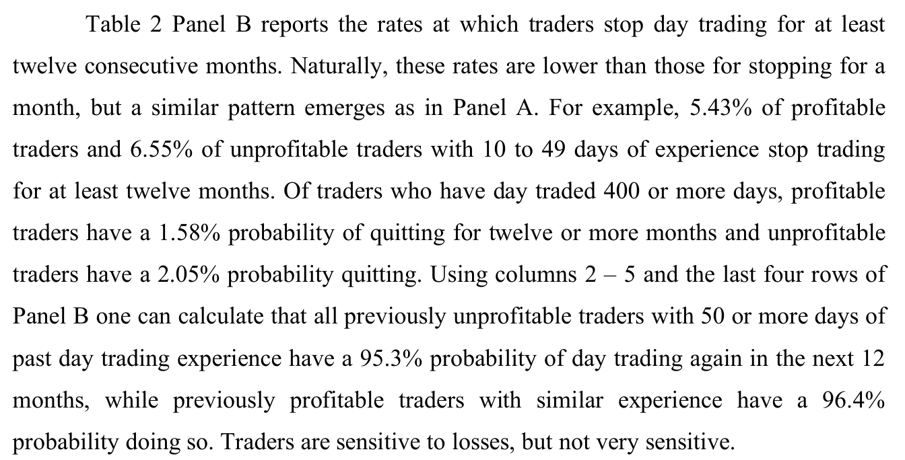
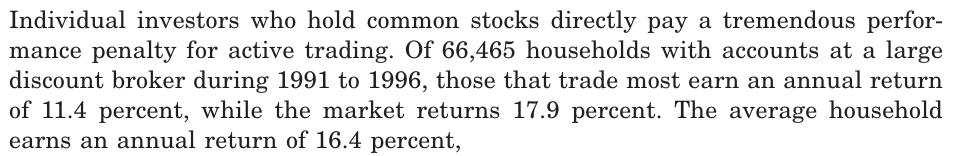
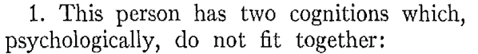
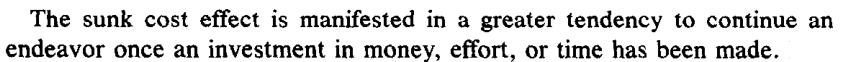
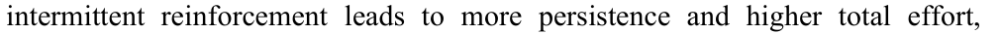

주식으로 1,000만 원을 잃은 사람이 있다고 가정해 보자. 그는 매일 계좌를 확인한다. 지난달에도, 이번 달에도 손실이 이어진다. 가끔 수익을 내는 날도 있지만 전체 계좌는 계속 줄어든다.
그렇다면 이 사람은 어떻게 행동해야 할까? 거래를 중단하거나 금액을 줄일 수 있다. 소액이나 모의투자로 전략을 검증할 수도 있다. 그런데도 다음 날 다시 주식을 매수한다.
흔히 이런 행동을 욕심이나 복수매매로 설명한다. 그러나 손실을 복구하려는 목적 자체가 잘못된 것은 아니다. 수익을 내고 싶은 사람과 손실을 복구하고 싶은 사람 모두 자산을 늘리려는 것이다.
사람들은 자신의 행동이 실패하고 있다는 증거를 보면서도 왜 그 행동을 바꾸지 않는 걸까?
1. 손실을 본 투자자들은 실제로 거래를 멈출까?
대만 주식시장의 개인 단타 투자자를 분석한 연구에서는 단타 경험이 50일 이상인 투자자 가운데 과거 손실을 경험한 사람의 95.3%가 이후 12개월 안에 다시 거래했다. 과거 수익 투자자는 96.4%였다.
| 집단 | 이후 12개월 내 재거래 비율 |
|---|---|
| 과거 손실 투자자 | 95.3% |
| 과거 수익 투자자 | 96.4% |
놀랍게도 전체 단타 거래량의 약 74%는 이전에 돈을 잃었던 투자자들이 만들어냈다. 물론 손실이 커지면 거래를 그만두는 사람도 있었다. 하지만 상당수는 돈을 잃고도 시장을 떠나지 않았다. 오히려 계속해서 새로운 거래에 참여했다.
손실을 경험하는 것과 행동을 바꾸는 것은 별개의 문제다.
출처: Barber 외, Learning, Fast or Slow, The Review of Asset Pricing Studies (2020). 논문

번역 “단타 경험이 50일 이상인 과거 손실 투자자가 향후 12개월 안에 다시 단타할 확률은 95.3%, 비슷한 경험을 가진 과거 수익 투자자는 96.4%였다.”
2. 계좌의 손실과 전략의 실패는 같은 말이 아니다
계좌가 마이너스라는 사실과 전략 자체에 수익성이 없다는 판단은 다르다. 승률이 60%이고 평균 이익과 손실의 크기가 같은 전략이라도 다섯 번 연속 손실이 발생할 수 있다. 거래비용을 제외하면 기대값이 양수여도 그렇다.
그런데 이 논리는 반대 방향으로도 이용된다.
이번에는 운이 없었을 뿐이다. 시장이 평소와 달랐다. 전략은 맞는데 내가 실수했다.
실제로 맞는 설명일 수도 있다. 하지만 자신의 전략이 언제 실패했다고 판단할지 정하지 않았다면 어떤 손실에도 새로운 설명을 붙일 수 있다. 전략을 검증하는 기준보다 전략을 계속 믿을 이유만 남게 되는 것이다.
3. 매매를 많이 할수록 돈을 더 벌 수 있다는 착각
바버와 오딘은 1991~1996년 미국 개인투자자 6만 6,465가구의 계좌를 분석했다.
| 집단 | 연평균 수익률 |
|---|---|
| 거래 최다 집단 | 11.4% |
| 전체 투자자 평균 | 16.4% |
| 시장 수익률 | 17.9% |
거래가 가장 활발했던 집단의 연평균 수익률은 시장보다 6.5%포인트 낮았다. 연구진은 과잉확신을 중요한 설명 요인으로 제시했다.
하루에 100만 원을 벌었다고 해보자. 정확한 분석 때문일 수도, 시장 전체가 상승했기 때문일 수도, 운이 좋았기 때문일 수도 있다. 그러나 투자자는 수익을 낸 경험을 자신의 능력에 대한 증거로 기억하기 쉽다.
나는 분명히 돈을 벌어본 사람이다.
과거에 수익을 냈다는 사실은 앞으로도 수익을 낼 능력이 있다는 충분한 증거가 아니다.
출처: Barber & Odean, Trading Is Hazardous to Your Wealth, The Journal of Finance (2000). 일반 주식투자 계좌 연구이며 순수 당일매매만을 분석한 것은 아니다. DOI

번역 “1991~1996년 계좌를 보유한 6만 6,465가구 가운데 거래가 가장 잦은 가구의 연 수익률은 11.4%였고, 시장은 17.9%, 평균 가구는 16.4%였다.”
4. 같은 손실을 보고도 서로 다르게 판단하는 이유
똑같이 1,000만 원을 잃은 두 사람이 있다. 두 사람 모두 계좌가 마이너스라는 사실을 안다.
첫 번째 사람은 생각한다.
내가 사용하는 전략은 지금까지 수익을 내지 못했다. 실력이 부족한 건지 전략에 문제가 있는 건지 검증해 봐야겠다.
두 번째 사람은 다르게 생각한다.
지금까지 손실이 발생한 건 사실이지만, 그렇다고 내 전략이 틀렸다는 뜻은 아니야. 시장 상황이 좋지 않았을 수도 있고, 내가 원칙을 제대로 지키지 못했을 수도 있어. 조금만 더 경험을 쌓으면 수익을 낼 수 있을 거야.
첫 번째 사람은 자신의 판단이 틀렸을 가능성을 검증한다. 두 번째 사람은 자신의 판단이 여전히 옳을 가능성을 중심으로 생각한다.
첫 번째 사람은 손실을 검증해야 할 정보로 받아들이고, 두 번째 사람은 설명해야 할 예외로 받아들인다.
두 번째 사람의 설명이 반드시 틀린 것은 아니다. 문제는 판단이 틀렸다고 인정할 조건을 정하지 않았다면 어떤 결과에도 기존 전략을 유지할 수 있다는 것이다.
1957년 레온 페스팅거가 제시한 인지부조화 이론은 자신의 믿음과 경험이 충돌할 때 느끼는 불편함을 설명한다. 사람은 믿음을 수정하기도 하지만 새로운 정보를 재해석하기도 한다.
나는 주식 매매를 잘할 수 있다.
그런데 실제 계좌는 지속적인 손실을 보여 준다. 이때 능력에 대한 평가를 수정할 수도, 손실의 원인을 외부 환경에서 찾을 수도 있다. 같은 계좌를 보고도 다른 결론에 도달하는 것이다.
출처: Leon Festinger, A Theory of Cognitive Dissonance, Stanford University Press (1957). 일반 심리 이론을 투자 상황에 적용한 해석이다.

번역 “이 사람은 심리적으로 서로 맞지 않는 두 가지 인지를 지니고 있다.”
5. 돈을 잃었다는 사실보다 판단이 틀렸다는 사실이 더 불편할 수 있다
오랫동안 공부하고 경험을 쌓아 만든 전략은 개인의 능력을 보여주는 증거처럼 느껴질 수 있다.
어떤 사람이 3년 동안 단타를 공부했다고 해보자. 차트를 분석하고 책을 읽으며 매일 시장을 관찰했다. 그런데 지금도 계좌는 마이너스다.
자신의 전략에 수익성이 없다고 인정하면 지난 3년의 시간과 노력도 다시 평가해야 할 것처럼 느껴질 수 있다. 전략을 수정하는 일이 단순한 기술적 판단이 아니라 자신의 능력을 평가하는 문제가 되는 것이다.
여기에는 매몰비용 오류도 영향을 줄 수 있다. 과거에 투입한 시간과 돈은 앞으로의 수익성을 보장하지 않지만, 사람은 이미 많이 투자했다는 이유로 행동을 지속할 수 있다.
여기까지 공부했는데 지금 그만두면 그동안의 노력이 아깝잖아.
그러나 과거에 3년을 공부했다는 사실과 앞으로 돈을 벌 수 있는지는 별개의 문제다. 이미 사용한 시간은 되돌릴 수 없다.
출처: Arkes & Blumer, The Psychology of Sunk Cost, Organizational Behavior and Human Decision Processes (1985). DOI

번역 “돈이나 노력, 시간을 투자하고 나면 하던 일을 계속하려는 경향이 커지는 현상이 매몰비용 효과다.”
6. 손실을 인정하는 사람은 심리적으로 더 강한 사람일까?
반드시 그렇지는 않다. 손실을 인정하는 사람도 자신의 판단이 틀렸다는 사실을 불편하게 느낀다. 차이는 그 감정이 행동을 얼마나 좌우하느냐다.
어떤 투자자는 매매 전에 거래 중단 기준을 정한다. 손실 한도에 도달하면 금액을 줄이고, 일정 횟수의 거래가 끝나면 결과를 검토한다. 전략이 어떤 조건에서 수익과 손실을 내는지도 기록한다.
반면 중단 기준이 없는 투자자는 손실이 발생할 때마다 그 자리에서 판단해야 한다. 오늘은 시장 탓으로, 내일은 일시적인 실수로 설명할 수 있다.
판단이 틀렸을 때 어떻게 행동할지 미리 정해 놓으면 감정에 의존해야 하는 상황을 줄일 수 있다.
물론 중단 기준을 세웠다고 반드시 지켜지는 것은 아니다. 너무 짧은 기간의 손익만 보고 전략을 폐기하는 것도 합리적이지 않을 수 있다. 필요한 것은 기대값과 위험을 평가할 수 있는 일관된 기준이다.
7. 거래를 계속하는 사람에게는 또 다른 이유가 있다
어떤 사람은 전략이 검증되지 않았고 손실이 누적된다는 사실을 인정하면서도 거래한다. 거래가 단순한 돈벌이 이상의 의미를 갖기 때문일 수 있다.
주식시장에는 언제든 새로운 기회가 나타날 수 있다. 오늘 실패해도 내일 성공할 수 있다. 불규칙한 보상은 행동을 지속시키는 요인이 될 수 있다.
행동심리학에서는 이를 간헐적 강화와 연결해 설명한다. 지난주 100만 원을 잃었어도 오늘 50만 원을 벌었다면, 전체 계좌는 마이너스인데도 다음 거래의 수익을 기대할 수 있다.
다만 간헐적 강화만으로 모든 단타 투자자의 거래 지속을 설명할 수는 없다. 실제 수익 가능성을 평가하고 거래하는 사람도 있다.

번역 “간헐적 강화는 전반적으로 행동의 지속성과 총 노력을 높였다.”
거래를 지속하는 이유가 전략의 객관적인 수익성 때문인지, 아니면 거래가 주는 기대와 보상 때문인지 구분해야 한다.
8. 손실을 인정한다는 것은 패배를 인정하는 것일까?
손실을 인정하는 사람도 미래의 수익 기회를 놓치고 싶지 않을 것이다. 그러나 과거의 결정과 앞으로의 결정을 분리할 수 있다.
지금까지 손실을 봤다는 사실은 바꿀 수 없다. 하지만 앞으로 같은 전략을 사용할지는 다시 결정할 수 있다.
반면 다른 사람에게 거래 중단은 자신이 오랫동안 믿어 온 가능성을 포기하는 일처럼 느껴질 수 있다.
대만 단타 투자자 연구에서는 손실 이력이 있는 투자자들이 거래량의 상당 부분을 차지했다. 연구진은 과잉확신, 편향된 학습, 금전 이외의 거래 동기 등을 가능한 설명으로 논의했다. 그렇다고 자존심을 지키기 위해 거래했다는 사실까지 입증한 것은 아니다.
손실을 경험하는 것과 손실로부터 배우는 것은 같은 일이 아니다.
그 차이를 이해하려면 얼마를 잃었는지뿐 아니라 거래를 통해 무엇을 얻으려 했는지, 자신의 능력을 어떻게 평가하는지, 투자한 시간에 어떤 의미를 부여하는지도 살펴봐야 한다.
9. 우리가 정말 생각해 봐야 할 질문
처음 등장했던 투자자를 떠올려 보자. 그는 1,000만 원을 잃었다. 거래를 중단할 수도 있고, 소액으로 전략을 검증할 수도 있다. 그런데도 다시 매매를 시작한다.
우리는 흔히 묻는다.
돈을 그렇게 잃었는데 왜 아직도 주식을 하는 거야?
하지만 이 질문은 그가 무엇을 잃었는지만 묻는다. 거래를 중단하지 못하는 이유를 이해하려면 다른 방향에서 생각해야 한다.
어쩌면 주식은 그에게 단순한 돈벌이 수단이 아닐지도 모른다. 자신의 능력을 증명하는 방법일 수도 있고, 경제적으로 성공할 수 있다는 희망일 수도 있다. 오랜 시간 쌓은 노력의 결과를 확인하고 싶은 마음일 수도 있다.
물론 모든 투자자가 그렇다는 뜻은 아니다. 실제로 전략에 수익성이 있다고 믿을 근거가 있어 거래하는 사람도 있다.
하지만 어떤 사람에게 전략이 틀렸다고 인정하는 일은 단순한 투자 판단을 넘어설 수 있다. 계좌 손실을 인정하는 것과 자신이 믿어 온 가능성을 포기하는 것은 다르게 느껴지기 때문이다.
그래서 마지막으로 이 질문을 던져 볼 필요가 있다.
“이 사람이 자신의 매매 전략이 틀렸다고 인정하면, 무엇을 잃게 되는가?”
돈일까. 그동안 투자한 시간일까. 자신의 능력에 대한 믿음일까. 아니면 언젠가는 성공할 수 있다는 희망일까.
어쩌면 사람들이 손실을 보면서도 매매를 멈추지 못하는 이유는 계좌에서 이미 사라진 돈뿐 아니라, 거래를 멈추는 순간 잃게 된다고 느끼는 무언가가 있기 때문인지도 모른다.
주: 통계 연구와 일반 심리학 이론을 투자 상황에 적용한 해석을 구분해 서술했다. 개별 투자자의 행동 원인을 특정 연구 하나로 단정할 수는 없다.